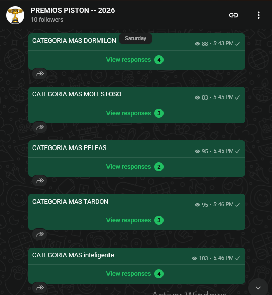

Los Premios Pistón (2da Edición) son una premiación anual organizada por Javier y Ariana para reconocer a los compañeros del salón en distintas categorías (ej. mejor en matemática, más ordenado, etc.).
Esta página la desarrollé yo solo, con el apoyo de Ariana en el diseño de los diplomas y la gestión del grupo creado para las votaciones de nominados y próximamente los ganadores. Empecé el 4 de noviembre a las 6:00.

Aquí están las categorías completas y ordenadas junto con sus respectivos nominados.
Reconocimiento a quien destacó por mantener el mayor orden y organización durante todo el año.
Nominados:
Para quien demostró la mayor agilidad y rapidez en sus actividades y en los deportes a lo largo del año.
Nominados:
Mención especial para quien tuvo la caligrafía más difícil de descifrar durante todo el año.
Nominados:
Premio a la dupla inseparable que demostró la mejor amistad y complicidad del año.
Dúos Nominados:
Reconocimiento al grupo de tres amigos con la mejor química y compañerismo del año.
Tríos Nominados:
Dedicado a quien sobresalió por su talento artístico y habilidad para el dibujo este año.
Nominados:
Para quien brilló más en la cancha y demostró el mejor nivel jugando fútbol este año.
Nominados:
Reconocimiento a quien demostró el mejor desempeño y destreza jugando vóley durante el año.
Nominados:
Premio al grupo más unido y con mejor convivencia dentro del salón a lo largo del año.
Grupos Nominados:
Para quien se tomó las cosas con más calma y sin ningún apuro a lo largo de todo el año. (y no corre rapido)
Nominados:
Reconocimiento a quien protagonizó los momentos con más AURA durante el año.
Nominados:
Para quien alegró más el salón con su sentido del humor y ocurrencias durante el año.
Nominados:
Mención para quien aprovechó cualquier momento del año para tomarse una buena siesta.
Nominados:
Para quien más destacó por hacer bromas y fastidiar al resto a lo largo del año.
Nominados:
Reconocimiento a quienes protagonizaron más discusiones y enfrentamientos durante el año.
Nominados:
Para quien hizo de la impuntualidad su sello personal al llegar tarde durante el año.
Nominados:
Reconocimiento a quien demostró mayor capacidad y rendimiento intelectual durante el año.
Nominados:
El galardón principal para quien destacó de forma integral en múltiples aspectos del año.
Nominados:
Premio a las parejas más comentadas y favoritas del salón durante el año (idea de Ariana).
Nominados:
Para quien se conformó con las mínimas muestras de atención a lo largo del año (otra idea de Ariana).
Nominados:
Reconocimiento a quien demostró el menor entusiasmo y esfuerzo en sus deberes del año.
Nominados:
Para quien le puso la mayor intensidad y exageración a cada situación vivida en el año.
Nominados: